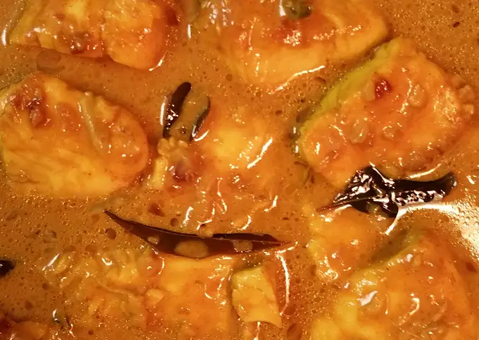

Kerala Style Coconut Milk Fish Curry

DESCRIPTION
Kerala Fish Curry With Coconut Milk is a curry from the Malabar coast.Fish in coconut milk is a delicious curry.
I have used seer fish to prepare this delicious Malabari curry. Serve it with Kerala boiled rice or steamed
rice. Let us see the steps to prepare Malabar fish curry with coconut.
INGREDIENTS
- 2 tsp Chilli Powder
- 3 Tilapia Fillets
- 2 cup Coconut Milk
- 3/4 tsp Turmeric Powder
- 1/2 tsp Tamarind Concentrate
- 2 tsp Salt
- 1 Green Chilli, finely sliced
- 2 Shallots
- 1 clove Garlic, finely minced
- 5 Fenugreek Seeds
- 1 tbsp Vegetable Oil
- 6 Curry Leaves
Steps
- Add coconut milk, chilli powder and turmeric to a non stick pot. Mix and heat to a simmer.
- Wash and cut the tilapia fillets into 1 inch cubes. Add the fish gently. Get it boiling again and add salt.
- Add the tamarind concentrate.
-
After 1 minute lower flame and cook uncovered till curry thickens and the fish is cooked.
- Heat the vegetable oil in a pan. Add the fenugreek and saute till it turns golden.
- Add garlic, shallots, green chilli and curry leaves and saute till it turns golden.
- Add to the curry. Don't stir. Cover and allow to sit 15-30 minutes before serving.